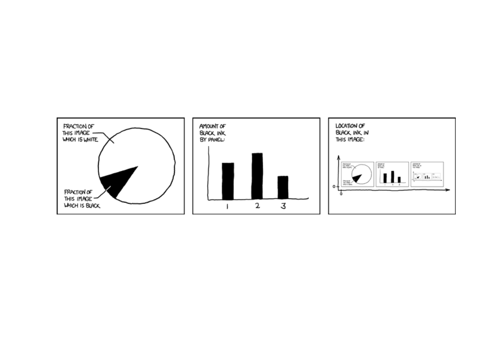
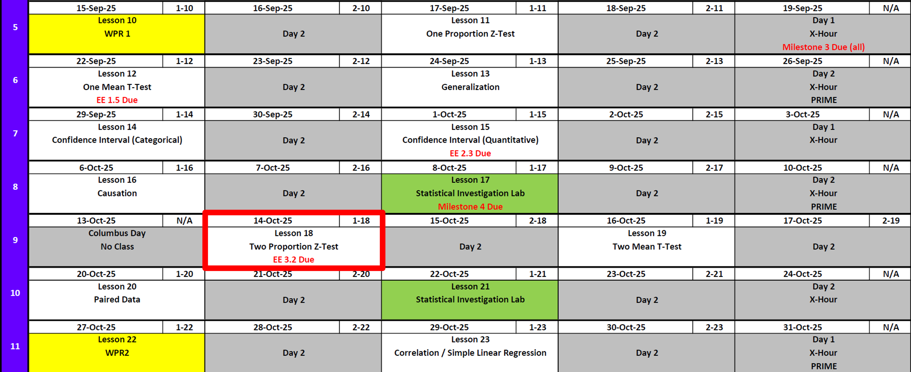
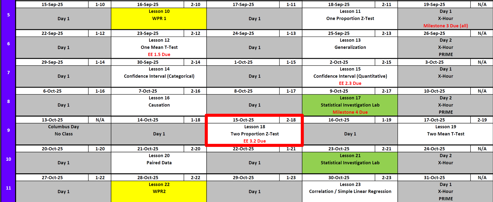
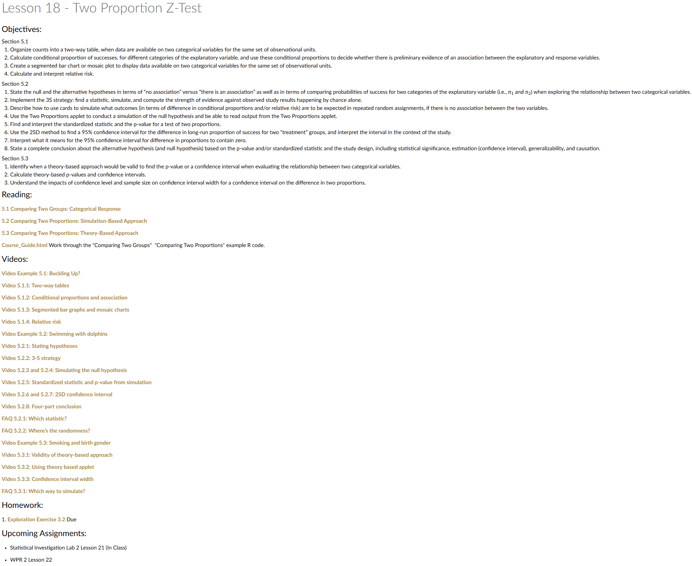
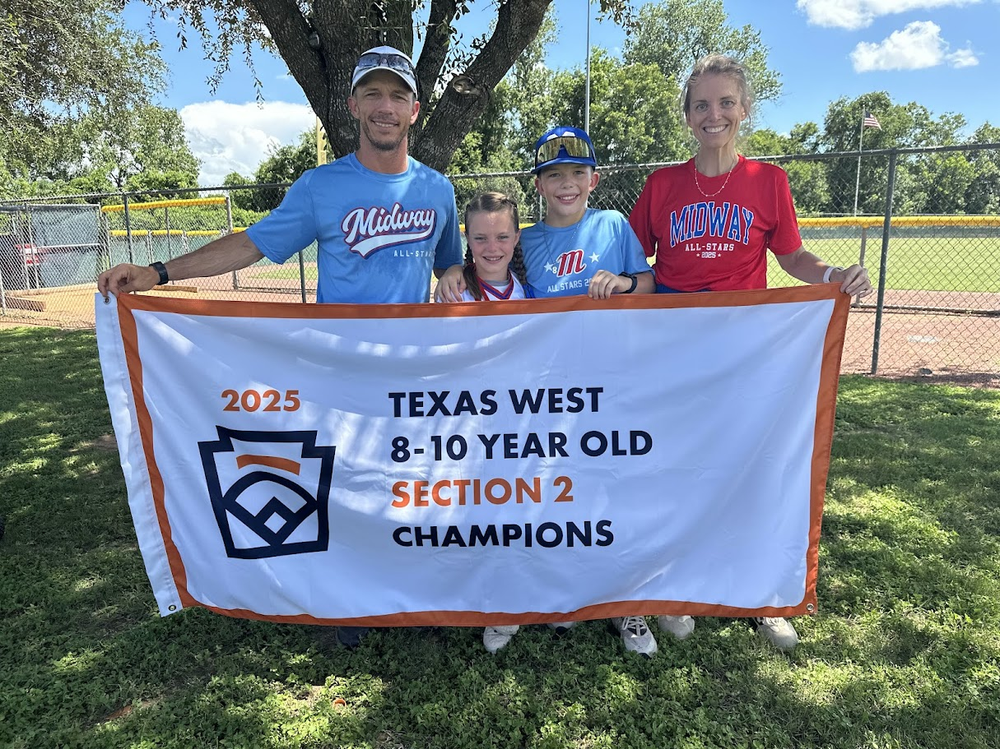
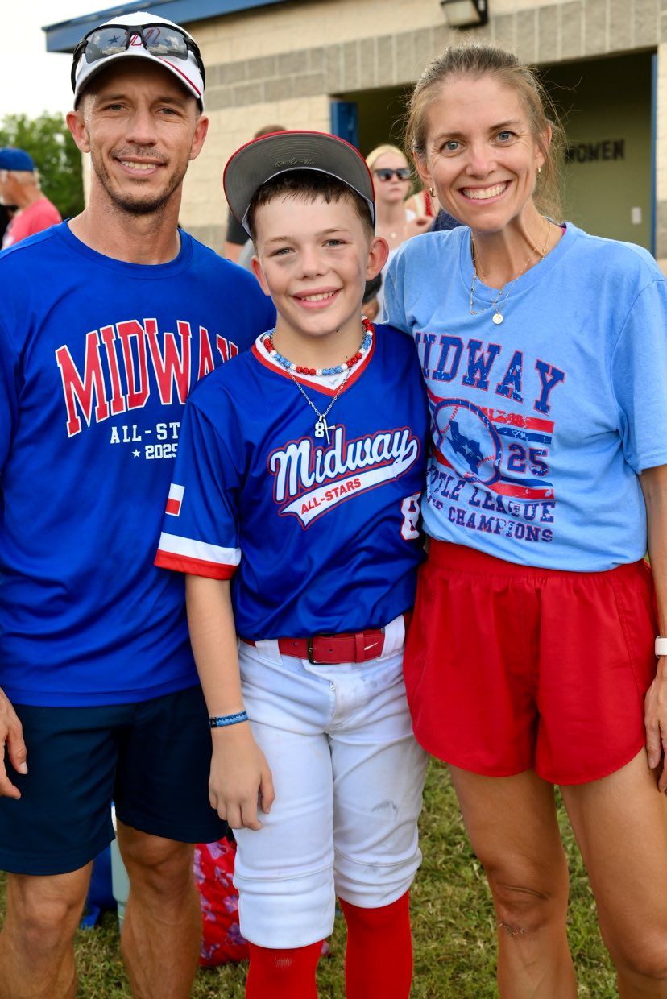
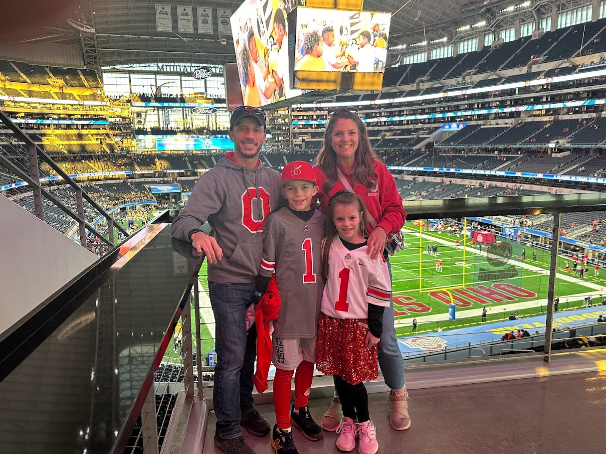
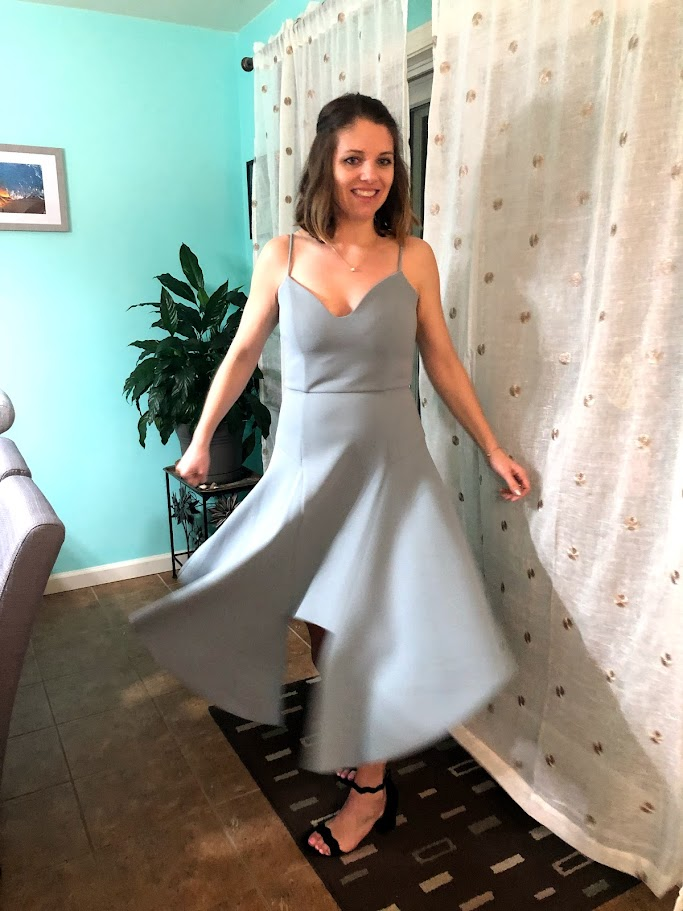
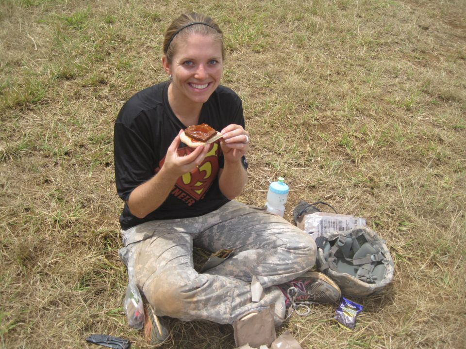
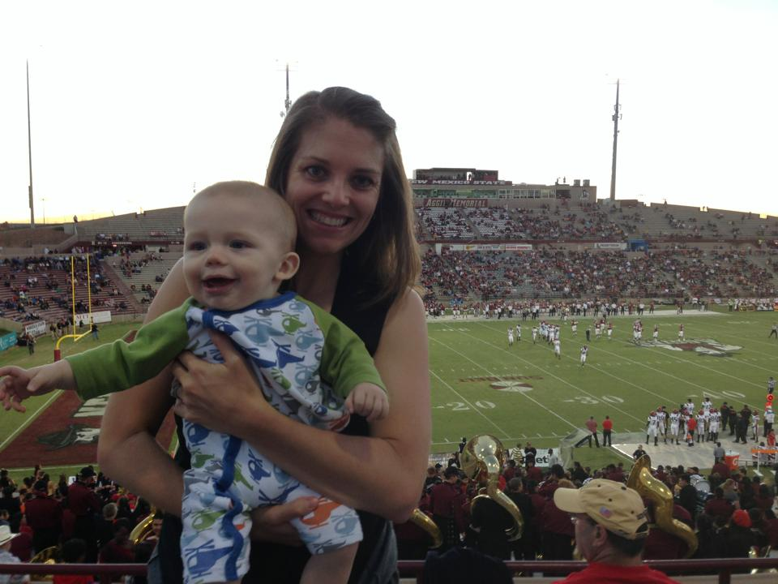

Lesson 18: Two Proportion Z-Test
Special Guest
- My Math Instructors
- MA103: LTC Bea Lambert
- MA104: MAJ Richard Gussenhoven
- MA205: MAJ Jesse Easter
- MA206: LTC Scott Billie
- MA103: LTC Bea Lambert
- LTC (R) Jesse Easter
- Armor Officer
- FA49 ORSA
- White Sands Missile Range
- Afghanistan (~2013)
- Armor Officer
Lesson Administration
Calendar
Day 1 (Swap Lesson 17 and Lesson 18)

Day 2 (Swap Lesson 17 and Lesson 18)


Milestone 4
- Due Today!
SIL 1 (Next Lesson)
Lesson 17Lesson 18- 25 Points!
- Like a WPR What does that mean?!!
- Read ahead
Exploration Exercise 3.2 (Next Lesson - HARD COPY!!)
- ⏰ Due 0700 on Lesson 18
- Lets take a look at it
- Day 1: Tuesday, 14 Oct 2025
- Day 2: Wednesday, 15 Oct 2025
Cal?
Reese?
Jill


10-10-10




Running Review
Review: \(z\)-Tests for One Proportion
For all cases:
\(H_0:\ \pi = \pi_0\)
\[ z = \frac{\hat{p} - \pi_0}{\sqrt{\frac{\hat{p}\,(1-\hat{p})}{n}}} \]
| Alternative Hypothesis | Formula for \(p\)-value | R Code |
|---|---|---|
| \(H_A:\ \pi > \pi_0\) | \(p = 1 - \Phi(z)\) | p_val <- 1 - pnorm(z_stat) |
| \(H_A:\ \pi < \pi_0\) | \(p = \Phi(z)\) | p_val <- pnorm(z_stat) |
| \(H_A:\ \pi \neq \pi_0\) | \(p = 2 \cdot (1 - \Phi(|z|))\) | p_val <- 2 * (1 - pnorm(abs(z_stat))) |
Where:
- \(\hat{p} = R/n\) (sample proportion)
- \(\pi_0\) = hypothesized proportion under \(H_0\)
- \(\Phi(\cdot)\) = cumulative distribution function (CDF) of the standard normal distribution
Validity Conditions
- Number of successes and failures must be greater than 10.
Confidence Interval for \(\pi\) (one proportion)
\[ \hat{p} \;\pm\; z_{\,1-\alpha/2}\,\sqrt{\frac{\hat{p}\,(1-\hat{p})}{n}} \]
I am \((1 - \alpha)\%\) confident that the true population proportion \(\pi\) lies between \([\text{lower bound}, \text{upper bound}]\).
Review: \(t\)-Tests for One Mean
For all cases:
\(H_0:\ \mu = \mu_0\)
\[ t = \frac{\bar{x} - \mu_0}{s / \sqrt{n}} \]
| Alternative Hypothesis | Formula for \(p\)-value | R Code |
|---|---|---|
| \(H_A:\ \mu > \mu_0\) | \(p = 1 - F_{t,df}(t)\) | p_val <- 1 - pt(t_stat, df) |
| \(H_A:\ \mu < \mu_0\) | \(p = F_{t,df}(t)\) | p_val <- pt(t_stat, df) |
| \(H_A:\ \mu \neq \mu_0\) | \(p = 2 \cdot (1 - F_{t,df}(|t|))\) | p_val <- 2 * (1 - pt(abs(t_stat), df)) |
Where:
- \(\bar{x}\) = sample mean
- \(\mu_0\) = hypothesized mean under \(H_0\)
- \(s\) = sample standard deviation
- \(n\) = sample size
- \(df = n - 1\) (degrees of freedom)
- \(F_{t,df}(\cdot)\) = CDF of Student’s \(t\) distribution with \(df\) degrees of freedom
Validity Conditions
- Sample size must be greater than 30.
Confidence Interval for \(\mu\) (one mean)
\[ \bar{x} \;\pm\; t_{\,1-\alpha/2,\;df}\,\frac{s}{\sqrt{n}}, \qquad df = n-1 \] I am \((1 - \alpha)\%\) confident that the true population mean \((\mu)\) lies between \([\text{lower bound}, \text{upper bound}]\).
Interpreting the \(p\)-value
Rejecting \(H_0\)
> Since the \(p\)-value is less than \(\alpha\) (e.g., \(0.05\)), we reject the null hypothesis.
> We conclude that there is sufficient evidence to suggest that [state the alternative claim in context].Failing to Reject \(H_0\)
> Since the \(p\)-value is greater than \(\alpha\) (e.g., \(0.05\)), we fail to reject the null hypothesis.
> We conclude that there is not sufficient evidence to suggest that [state the alternative claim in context].Strength of evidence: Smaller \(p\) means stronger evidence against \(H_0\).
Other Notes
- Generalization: We can generalize results to a larger population if the data come from a random and representative sample of that population.
- Causation: We can claim causation if participants are randomly assigned to treatments in an experiment. Without random assignment, we can only conclude association, not causation.
\[ \begin{array}{|c|c|c|} \hline & \text{Randomly Sampled} & \text{Not Randomly Sampled} \\ \hline \textbf{Randomly Assigned} & \begin{array}{c} \text{Generalize: Yes} \\ \text{Causation: Yes} \end{array} & \begin{array}{c} \text{Generalize: No} \\ \text{Causation: Yes} \end{array} \\ \hline \textbf{Not Randomly Assigned} & \begin{array}{c} \text{Generalize: Yes} \\ \text{Causation: No} \end{array} & \begin{array}{c} \text{Generalize: No} \\ \text{Causation: No} \end{array} \\ \hline \end{array} \]
- Parameters vs. Statistics: A parameter is a fixed (but usually unknown) numerical value describing a population (e.g., \(\mu\), \(\sigma\), \(\pi\)). A statistic is a numerical value computed from a sample (e.g., \(\bar{x}\), \(s\), \(\hat{p}\)).
- Parameters = target (what we want to know).
- Statistics = evidence (what we can actually measure).
- We use statistics to estimate parameters, and because different samples give different statistics, we capture this variability with confidence intervals.
- Parameters = target (what we want to know).
| Quantity | Population (Parameter) | Sample (Statistic) |
|---|---|---|
| Center (mean) | \(\mu\) | \(\bar{x}\) |
| Spread (SD) | \(\sigma\) | \(s\) |
| Proportion “success” | \(\pi\) | \(\hat{p}\) |
Two Proportion Z-Test
In a post-WPR survey in MA206, 81 out of 125 students who failed the WPR did the recommended review, while 383 out of 525 students who passed did the recommended review problem.
Question: Is there a higher proportion of cadets who passed the test given they did the review?
Is \(\frac{383}{525} \;>\; \frac{81}{125}\)?
Step 1: Hypotheses
Null:
\[H_0:\ \pi_{\text{pass-review}} - \pi_{\text{fail-review}} = 0\]Alternative (one-sided):
\[H_A:\ \pi_{\text{pass-review}} - \pi_{\text{fail-review}} > 0\]
Step 2: Test Statistic (pooled SE)
\[ z \;=\; \frac{(\hat p_1-\hat p_2)-(\pi_1-\pi_2)}{\sqrt{\hat p(1-\hat p)\left(\frac{1}{n_1}+\frac{1}{n_2}\right)}}. \]
\(\hat p_1=\dfrac{383}{525}\) (passed group)
\(\hat p_2=\dfrac{81}{125}\) (failed group),
\(\hat p=\dfrac{383+81}{524+125}\) (pooled)
Step 3: Compute
\(\hat p_1 = \dfrac{383}{525} = 0.7295\)
\(\hat p_2 = \dfrac{81}{125} = 0.6560\)
\(\hat p = \dfrac{383+81}{525+125} = \dfrac{465}{650} = 0.7154\)
\(SE = \sqrt{0.7154 \cdot (1-0.7154)\left(\tfrac{1}{524}+\tfrac{1}{125}\right)} = 0.04498\)
\(z = \dfrac{0.7295 - 0.6560}{0.04491} = 1.812\)
\(p\_{\text{one-sided}} = 1 - \Phi(1.637) \approx 0.0349\)
p1_hat <- 383/525
p2_hat <- 81/125
n1 <- 125
n2 <- 525
p_pool <- (383+81)/(525+125)
(z_stat <- (p1_hat - p2_hat) / (sqrt(p_pool*(1-p_pool)*(1/n1 + 1/n2))))[1] 1.812426(p_val <- 1 - pnorm(z_stat))[1] 0.03496018Confidence Interval for Two Proportions
For a 95% CI, use the unpooled standard error:
\[ (\hat p_1-\hat p_2) \;\pm\; z_{0.975}\, \sqrt{\frac{\hat p_1(1-\hat p_1)}{n_1} + \frac{\hat p_2(1-\hat p_2)}{n_2}}. \]
\(\hat p_1 - \hat p_2 = 0.7295 - 0.6480 = 0.0815\)
\(SE_{\text{unpooled}} = \sqrt{\dfrac{0.7295(1-0.7295)}{525} + \dfrac{0.6480(1-0.6480)}{125}} = 0.0469\)
\(z_{0.975} = 1.96\) qnorm(.975, 0, 1)
\(\text{Margin of Error} = 1.96 \times 0.0469 = 0.0919\)
\(95\%\ \text{CI} = 0.0815 \;\pm\; 0.0919 = (-0.0104,\; 0.1735)\)
z_star <- qnorm(.975)
SE_un <- sqrt(p1_hat*(1 - p1_hat)/n1 + p2_hat*(1 - p2_hat)/n2)
diff_hat <- p1_hat - p2_hat
(ci <- c(diff_hat - z_star*SE_un, diff_hat + z_star*SE_un))[1] -0.006413271 0.169460890Validity & Scope
- Validity: independence of groups; each group has at least 10 successes/failures (here: 383/142 and 81/43) ✔️
- Scope:
- Generalization requires random sampling from the cadet population.
So what? Since our data come from a course survey (not a random sample), we cannot generalize these results to the entire Corps of Cadets.
- Causation requires random assignment to “did review” vs “did not review.”
So what? Because students chose for themselves whether to do the review, we cannot conclude that doing the review causes higher pass rates — only that the two are associated in this sample.
- Generalization requires random sampling from the cadet population.
In-Class Activity: Two Proportion Z-Test
Scenario:
Is there a difference between the proportion of cadets who are left-handed and the proportion who are left-footed?
Step 1: Collect Data
- Quick poll by show of hands:
- \(n\) = total number of cadets (everyone answers both questions).
- \(x_1\) = number of cadets who identify as left-handed.
- \(x_2\) = number of cadets who identify as left-footed (e.g., which foot they’d use to kick a ball).
Step 2: State Hypotheses
- \(H_0:\ \pi_{\text{left-hand}} - \pi_{\text{left-foot}} = 0\)
- \(H_A:\ \pi_{\text{left-hand}} - \pi_{\text{left-foot}} \neq 0\)
Step 3: Compute Test Statistic
- \(\hat p_1 = x_1/n\), \(\hat p_2 = x_2/n\).
- (Here the same students are polled for both traits, so strictly speaking the samples are not independent — this is a good teaching moment about the independence assumption.)
- Still, you can proceed with the two-proportion \(z\)-test as if independent to practice mechanics.
Step 4: Decision
- Compute \(z = \dfrac{(\hat p_1 - \hat p_2) - 0}{\sqrt{\hat p(1-\hat p)(\tfrac{1}{n}+\tfrac{1}{n})}}\),
get the \(p\)-value, and compare to \(\alpha = 0.05\).
Step 5: Interpret & Discuss
- Do we have evidence that the proportion of left-handers differs from the proportion of left-footers in the class?
- So what?
- Not a random sample \(\;\rightarrow\;\) cannot generalize to the broader cadet population.
- Not random assignment \(\;\rightarrow\;\) cannot claim causation (we can’t say being left-handed causes left-footedness).
- But: this gives practice with a two-proportion \(z\)-test and sparks discussion about assumptions (independence).
Board Problem: Two Proportion Z-Test
Researchers at West Point wanted to know:
Does the new study technique increase performance?
- They randomly sampled 200 cadets from across the Corps.
- They then randomly assigned half (100 cadets) to use the new study technique, while the other half (100 cadets) used the standard approach.
- After a week, all cadets took the same quiz.
Results:
- New technique group: \(n_1 = 100\), \(x_1 = 78\) passed the quiz.
- Standard group: \(n_2 = 100\), \(x_2 = 65\) passed the quiz.
NoteSolution
Step 1: Hypotheses
- \(H_0:\ \pi_{\text{new}} - \pi_{\text{standard}} = 0\)
- \(H_A:\ \pi_{\text{new}} - \pi_{\text{standard}} > 0\)
Step 2: Sample Proportions
- \(\hat p_1 = 78/100 = 0.78\)
- \(\hat p_2 = 65/100 = 0.65\)
- Difference: \(\hat p_1 - \hat p_2 = 0.13\)
Step 3: Test Statistic
- Pooled \(\hat p = (78+65)/200 = 0.715\)
- \(SE = \sqrt{0.715(1-0.715)\left(\tfrac{1}{100}+\tfrac{1}{100}\right)} \approx 0.0639\)
- \(z = 0.13 / 0.0639 \approx 2.04\)
- 1 - pnorm(z_stat) \(\space p\text{-value} \approx 0.021\)
Step 4: Interpretation
- Since \(p \approx 0.021 < 0.05\), we reject \(H_0\).
- There is statistically significant evidence that the new study technique increases quiz performance.
- The true improvement is estimated to be between 0.4% and 25.6% higher pass rates.
Scope of Inference:
- Generalization: Random sampling → we can generalize to the Corps of Cadets.
- Causation: Random assignment → we can conclude the study technique causes higher performance.
Before you leave
Today:
- Any questions for me?
Upcoming Graded Events
- WPR 2: Lesson 22